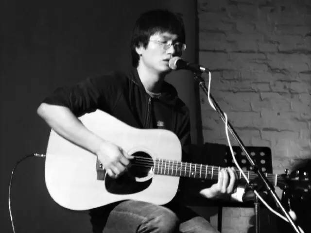
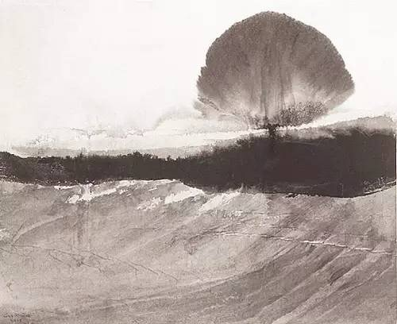
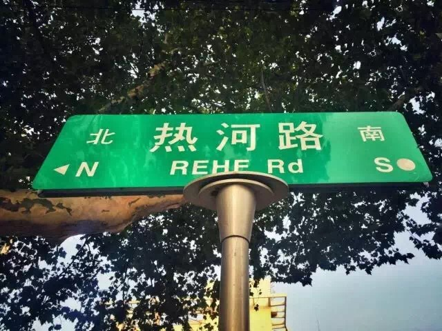
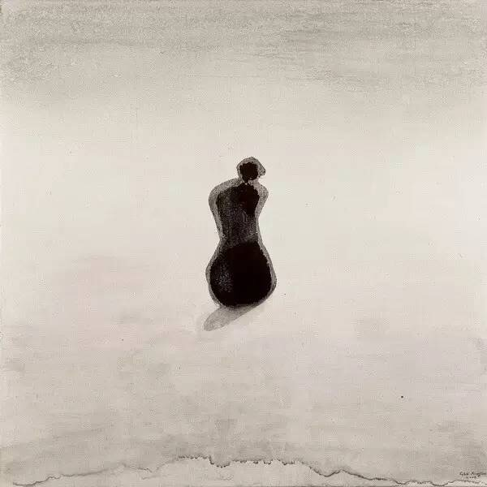

Start here：
1.

天空之城-李志
我想回到过去，沉默着欢喜
天空之城在哭泣，越来越明亮的你
爱情不过是生活的屁
折磨着我，也折磨着你

故事的开始，岁末酷寒，你爱过的那个歌手，他曾经只有一把吉他，只得在酒吧里唱歌。
后来，他把演唱会开去了工体，你在现场看他，坐在人山人海中，荧光棒在眼前不停挥动。
这一切都和那间简陋而吵杂的车库相对，山呼海啸让你觉得更加陌生。
你总爱在堆成山的记忆里捡拾好的片段回味，谢天谢地，也正如你所愿，你只记得最初的见面。
那晚在沈阳，当巡演不得不路过这个对他陌生的东北城市时。
他一个人擦拭着吉他弦，说：
“有时候我很极端，但是现在我会越来越淡定。
因为我曾经是个酒吧歌手，而且是个不受欢迎的酒吧歌手。
所以说，什么事情我都知道。年轻嘛，年少气盛。
后来觉得无所谓。你肯定不知道我在说什么。
其实谁在台上唱歌不重要，关键是你心里面想唱歌，他是我们的一种表达方式，至少是我的。”
他说完了，你坐在冰凉的水泥地上，手里举着摇晃的数码相机，
尝试站起来，又被周围的人摁了回去。
那场名叫“动物凶猛”的演出，在零度的空气里继续进行着，
持续了2个小时，票价只有60元。
那个歌手的指尖最终在猛烈地扫弦时擦出了血，
他说：为了对得起你们的60块钱，我会接着唱下去。
你喊了一嗓子，“好。”
那年你19岁，没过几天你在一个天还未亮的清晨，坐着一辆银灰色的桑坦纳去了铁岭。
你穿得厚实，像商场里的玩具人偶。你坐在副驾驶的位置上，绑紧安全带，
心想着：从今以后，所有的过去都不值一提。
2.

热河-李志
没有人在热河路谈恋爱
总有人在天亮时伤感
如果年轻时你没来过热河路
那你现在的生活是不是很幸福

山阴路的夏天-李志
南京的雨不停地下不停地下
有些人却注定要相遇
你是一片光荣的叶子
落在我卑贱的心
像往常一样我为自己生气并且歌唱
那么乏力，爱也吹不动的叶子

总会有人去寻找热河路五块钱的理发店和山阴路八楼的房间，
两百米长的山阴路，和破旧的热河路。
那是李志的热河与山阴，
以后你也会遇到自己的山阴路、热河路。
你不断去寻找山阴路和热河路的故事，
不过是想找回失去的某些东西。
就像高行健所写的那样:
“你得让他，那个孩子，那个少年，那个没长成的男人，
那个做白日梦的幸存者，那个狂妄之徒，那个日渐变得狡猾的家伙，
那个尚未丧失良智却也恶又还残留点同情心的你那过去，
从记忆中出来，别替他辩解与忏悔。”
3.
和你在一起-李志
我想和你在一起
就算我不爱你
宝贝 人和人 一场游戏

《和你在一起》这首歌最震撼的是勾三搭四现场版
以下文字均来自网易云音乐评论区:
人生总要有遗憾，当我们选择一个人放弃一个人的时候。
也许多年后会想假如当时不是他而是他会怎么样。
不爱的借口千千万，但爱却没有缘由。
我想和你在一起！只要你说，你也想。
我们之间的距离，只要你跨出一小步，剩下的我都可以义无反顾向你奔去。
可是，你说你只想这样。我所有的义无反顾便化作尘埃。
用王家卫的台词来说，今天是我们分开的第847天，
两年多的时间里，我没有爱过谁，
我的手在离开你之后没有被谁牵过，
我的嘴在你离开之后也没有被谁亲过，
闭上眼睛，我还能感受到你的手你的唇，就离开那么一会儿，
我以为我一睁开眼睛，我一叫你，你就回来了。